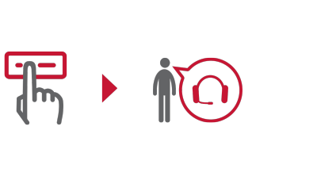
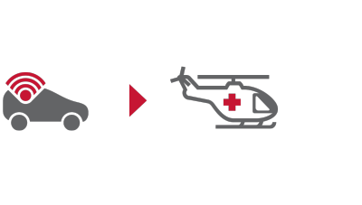

ПРИНЦИП РАБОТЫ СИСТЕМЫ
Система «ЭРА-ГЛОНАСС» предусматривает несколько сценариев развития событий в случае ДТП, участником или свидетелем которого Вы стали.

РУЧНОЙ РЕЖИМ
При необходимости Вы вызываете помощь самостоятельно одним нажатием кнопки SOS, связавшись с оператором и сообщив о происшествии.

АВТОМАТИЧЕСКИЙ ВЫЗОВ
При серьезной аварии экстренный сигнал о помощи передается автоматически (тяжесть ДТП оценивается датчиками системы). Спецслужбы вызываются диспетчером немедленно.

ПОМОЩЬ ДРУГОМУ
Став свидетелем ДТП, Вы также можете вызвать помощь, связавшись с оператором и сообщив ему о происшествии.